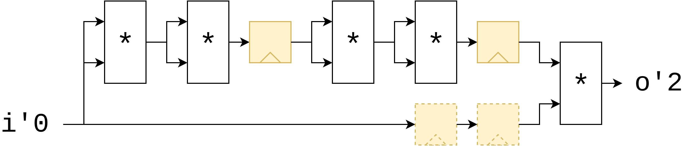
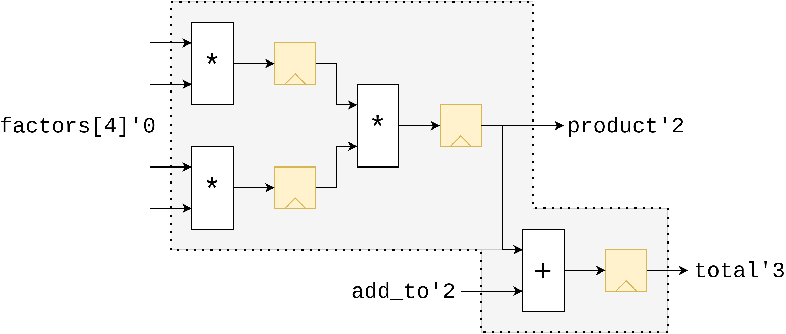

Latency Counting
If there's one thing the name "SUS" is synonimous with, it's Latency Counting. Latency Counting is the algorithm that makes it easy to add pipeline stages anywhere in a hardware design, automatically adjusts the pipelining of the signals around it, and even lets the various latency-sensitive modules in your design react to the change in latency.
A short video on how Latency Counting is used is here:
Theory
Inserting latency registers on every path that requires them is an incredibly tedious job. Especicially if one has many signals that have to be kept in sync for every latency register added. This is why I propose a terse pipelining notation. Simply add the reg keyword to any critical path and any paths running parallel to it will get latency added to compensate. This is accomplished by adding a 'latency' field to every path. Starting from an arbitrary starting point, all locals connected to it can then get an 'absolute' latency value, where locals dependent on multiple paths take the maximum latency of their source paths. From this we can then recompute the path latencies to be exact latencies, and add the necessary registers.
Automatic pipeline balancing
Imagine we wish to pipeline a "raise to the 17th power" module. We can implement this computation by multiplying i by itself 4 times, and then multiplying that by the original i once more. Now, because the critical path in this module is be quite long, we decide to add a few pipeline stages between the multipliers using the reg keyword, such that our critical path only ever includes two multipliers instead of 5. Latency Counting will then ensure that the parallel path (the original i copy), is delayed by the same amount by adding two registers on that path too.
module pow17 {
input int#(FROM: 0, TO: 10) i
output int o
int i2 = i * i
reg int i4 = i2 * i2
int i8 = i4 * i4
reg int i16 = i8 * i8
o = i16 * i
}

Inference of latencies on ports
Some languages that support pipelining constructs similar to this have the restriction that all inputs must be provided at the same time, and all outputs are produced at the same time, some number of clock cycles later. SUS does not have this restriction. The ports in a module will be assigned absolute latencies such that the inputs come in as late as possible, and the outputs are produced as early as possible, thereby packing the module together as compactly as possible. Using a module with such skewed port latencies may seem daunting and error-prone at first, but you'll notice that where this module is instantiated, the compiler will automatically adjust for its port latencies, so in effect, you as the user don't have to worry about it.
module wonky_port_latencies {
input int#(FROM: 0, TO: 16)[4] factors
input int#(FROM: 0, TO: 16) add_to
input int#(FROM: 0, TO: 16) product
output int total
reg int mul0 = factors[0] * factors[1]
reg int mul1 = factors[2] * factors[3]
reg product = mul0 * mul1
reg total = product + add_to
}

Latency Specifiers
The way Latency Counting actually works is by assigning an integer value to each wire in your design - the so-called "Absolute Latency" - which denotes how much this wire is delayed compared to an arbitrarily chosen starting point. The programmer can explicitly specify these absolute latencies by adding 'N annotations to the wire's declarations. This can cause the compiler to have to insert extra registers.
module module_taking_time {
input bool i'0
output bool o'5
o = i
}
Specifying latencies on ports is also the gateway to using Latency Inference.